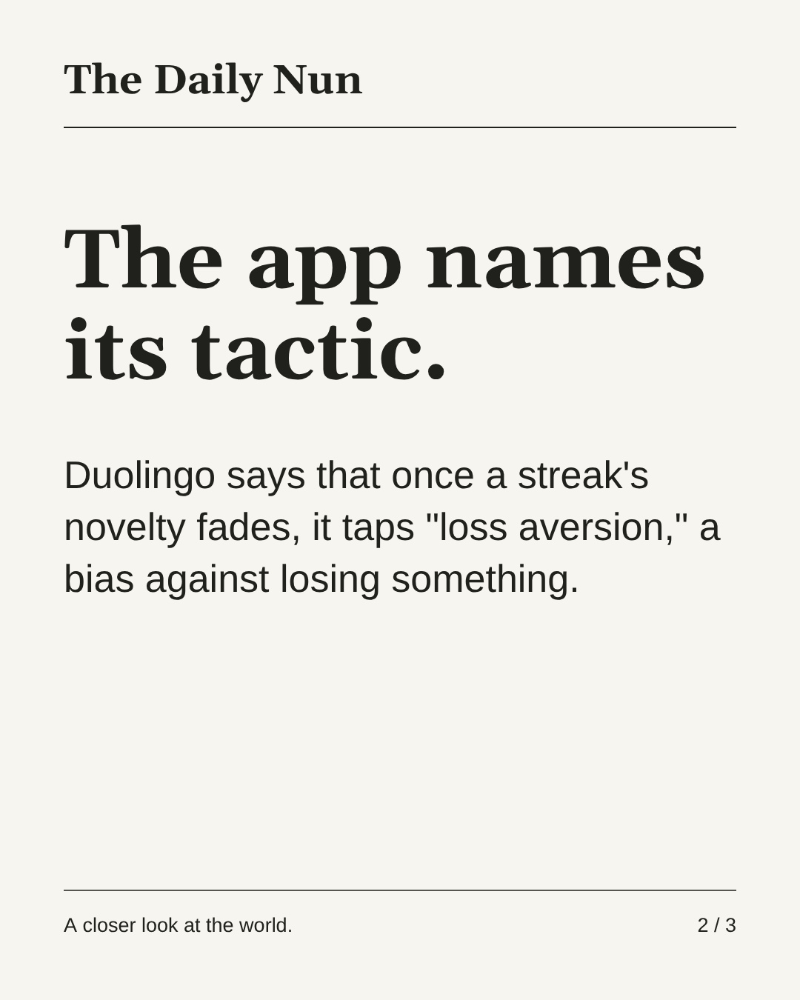

Caption
Short video voiceover
Voiceover text:
"Does a streak help anyone learn? Duolingo says that once a streak stops feeling new, it taps loss aversion: a bias against losing something. Research says a missed day barely affects a habit. But seeing a streak reset can lead people to do less. What no study found here shows is that streaks help anyone learn more. Counting days is not the same as learning. The Daily Nun."
On-screen text:
1. Does a streak help anyone learn? 2. Duolingo: the streak taps "loss aversion." 3. A missed day barely affects a habit. 4. Seeing a reset can lead to less. 5. No study found here shows more learning. 6. Counting days is not learning. 7. The Daily Nun / A closer look at the world.